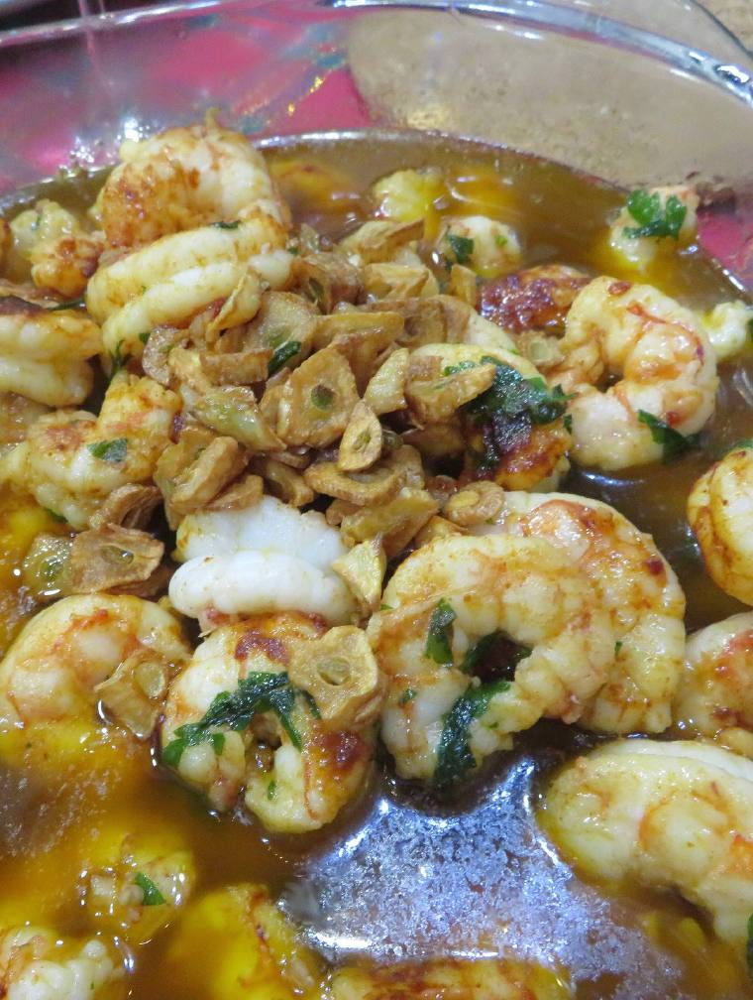

Entrées espagnoles et tapas

Entrées espagnoles et tapas
Gambas al ajillo
Crevettes à l’ail
Préparation : 10 min
Cuisson : 3 min
Ingrédients (pour 6 personnes, en tapas)
- 300 g de gambas décortiquées
- 2 gousses d’ail
- 1 guindilla (piment sec)
- 8 cl d’huile d’olive
- persil, poivre blanc, sel
Quantités adaptées. Les temps de cuisson ne sont pas recalculés.
- Chauffer l’huile à feu vif dans une cassolette ou une poêle.
- Ajouter l’ail en lamelles et le piment, puis aussitôt les gambas.
- Cuire 1 à 2 minutes, jusqu’à ce qu’elles soient opaques. Hors du feu, saler, poivrer, persiller.
D’après la Real Academia de Gastronomía. Traduit et reformulé, quantité d’huile précisée.